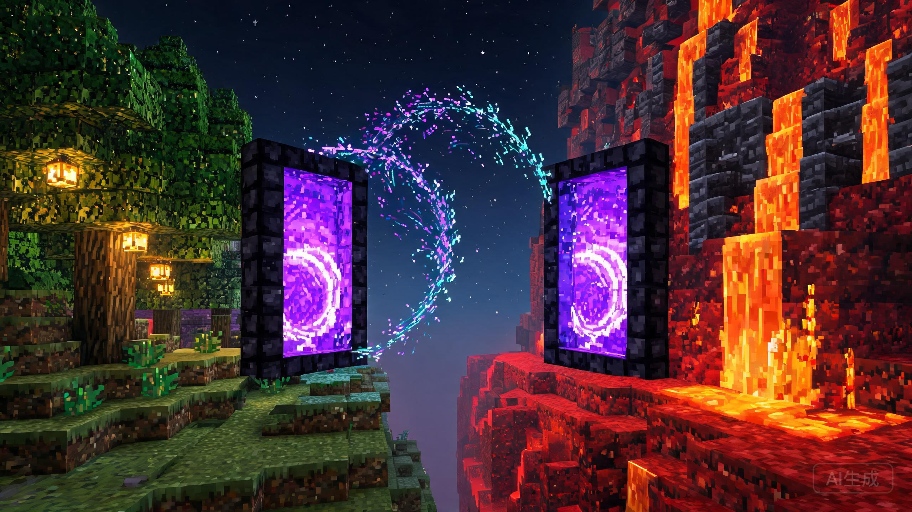
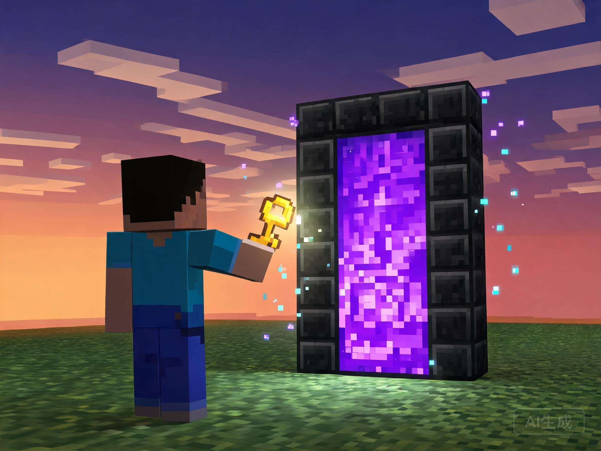

两扇门，一次绑定，双向互通。为 Paper 系服务端打造的配对式跨世界传送门插件——像原版下界门一样自然走进去，但连接的是任意两个世界的任意两扇门。

原版下界门是 Minecraft 里最优雅的传送设计：走进去，穿过一片紫色幕布，从另一端出来。但它有两条硬边界——只能连接主世界与下界的固定比例坐标，且两端位置不可选择。服主想让玩家在主世界出生点与千里之外的基地之间自由往返，只能借助 Multiverse-Portals 这类管理员工具：敲命令、选区域、填坐标，创建过程与游戏体验完全割裂。
《任意门》（DokodemoDoor，下称 DDoor）把下界门的沉浸感还给了玩家自己：在任意两个世界各放一扇普通的门，手持一把"门之钥"依次右键两扇门，它们从此配对互通。此后走进任意一扇门，就从另一扇门前走出——没有命令，没有菜单，和推开哆啦A梦的任意门一样直白。
本插件的唯一核心命题是点对点配对传送。围绕它做深做透，同时明确不做什么：
传送门类插件在 Bukkit 生态已发展十余年，头部方案可归为三派：以 Multiverse-Portals 为代表的"选区派"，以 MyWorlds 为代表的"告示牌派"，以及以 AdvancedPortals 为代表的"命令标签派"[2][3][4]。三派的共同短板是一致的：以"目的地"为中心建模——每个门指向一个坐标或另一个门，创建权基本只对管理员开放，创建流程脱离游戏操作本身[5]。
| 维度 | Multiverse-Portals | MyWorlds | AdvancedPortals | 任意门 DDoor |
|---|---|---|---|---|
| 创建方式 | 木棍选区 + 命令 | 告示牌写规则 | 命令 / GUI 配标签 | 放门 + 钥匙右键 |
| 创建者 | 仅管理员 | 仅管理员 | 管理员为主 | 玩家自助（可配置） |
| 连接模型 | 门 → 目的地坐标 | 门 ↔ 门（牌面声明） | 门 → 目的地/标签 | 门 ↔ 门（实体配对） |
| 跨世界传送 | 支持 | 支持 | 支持 | 支持 |
| 触发体验 | 走进区域即传 | 走进门方块即传 | 走进区域/触发词 | 走进门框即传 |
| 视觉沉浸 | 无反馈 | 原版门方块 | 一般 | 粒子 + 音效 + 过渡 |
| 前置依赖 | Multiverse-Core | 同族插件群 | 无硬依赖 | 零硬依赖 |
| 玩家上手成本 | 高 | 中 | 中 | 极低（两个动作） |
雷达图暴露出一个市场空档：现有方案把"传送"当作基础设施来做，没人把它当作玩家玩法来做。玩家自助创建意味着门本身成为可规划、可交易、可展示的生存内容——基地入口的对开门、跨服活动的往返门、村落之间的公交网络，都会从玩家社区里自然生长出来，这是三款头部插件都无法提供的服务器生态价值。
另一个被忽视的差异是心智模型。"门 A 指向门 B"和"门 A 与门 B 是一对"听起来相似，实际体验完全不同：前者要求玩家理解"目的地"这个抽象概念并在创建时做出单向决策；后者只需要玩家拿起钥匙把两扇门"锁"在一起——配对成功后双向自动生效，没有方向可以搞错。
插件的最小单元不是"门"，而是"门对"（DoorPair）。一扇门在被钥匙选中之前只是一扇普通门；被选中的门进入"待配对"状态并开始 60 秒倒计时；倒计时内选中第二扇门，两门缔结为一对，此后任意时刻踏入其中一扇，都会从另一扇门前走出。
创建一对任意门需要三个动作，全程无需打开任何界面：

传送的触发方式默认选择物理走进而非右键交互：玩家推门而入的动线与原版下界门完全一致，肌肉记忆零迁移成本（V1.0.5 起玩家可在 GUI 个人设置中改为右键或左键点击触发，防止路过误传；左键模式下潜行开门、拆门等原版操作不受影响）。传送发生时按固定时序播放三段反馈——门口紫颂粒子收拢为漩涡（200ms）→ 屏幕短暂渐暗（可配置，默认 300ms）→ 落点粒子绽放并播放 BLOCK_CHORUS_FLOWER_TELEPORT 音效。整套反馈控制在半秒内完成，节奏快于下界门的原版过场。
落点计算遵循门前安全原则：传送目的地固定为对侧门"面向外"的一格，插件自动校验该格及其头顶两格无碰撞方块、脚下有承托面；校验失败时向门左右两侧逐格探测，全部失败则拒绝传送并提示对侧异常，玩家不会被传进方块或虚空。V1.0.5 起拒绝提示默认携带完整诊断——哪个坐标的什么方块挡住了落点或头部、脚下悬空还是对侧门在哪个世界哪个坐标被破坏，玩家可按需在设置中切换为简化文案。
| 状态 | 视觉 | 音效 | 渲染策略 |
|---|---|---|---|
| 待机（已配对） | 门框边缘稀疏紫颂粒子缓慢上浮 | 无（保持安静） | 仅 32 格内玩家可见，2 粒/次 · 4 tick 间隔 |
| 待配对 | 门框粒子明亮密集 + 门顶悬浮倒计时 | 琥珀音（上界铜钟轻击） | 同上，密度翻倍 |
| 传送瞬间 | 粒子收拢漩涡 → 落点绽放 | 紫颂果传送音 | 事件驱动，单次触发 |
| 配对成功 | 两门同时光柱爆发 | 悦灵投掷音 + 经验球音 | 事件驱动，单次触发 |
所有粒子使用 Paper API 的 player.spawnParticle() 按接收者发送，而非世界级广播——一个 30 人的服务器上，只有站在门附近的少数玩家收到粒子包，这是性能设计的细节之一（详见第 5 章）。
功能按五个模块拆解：配对系统是数据基石，传送引擎是体验核心，门之钥是经济阀门，管理界面是运维入口，防护体系是兜底安全。每个模块先给交互原型，再给逻辑细节。
材质支持：凡继承 org.bukkit.block.data.type.Door 的方块全部支持——涵盖 1.21.8 全部 11 种木门、铁门与铜门系（含氧化变体）。门允许放在任意位置，无需贴墙。铁门无法徒手打开的问题不影响本插件：传送判定基于"玩家身体进入门框空间"，与门的开合状态无关，玩家可以直接穿门而过（这也让铁门成为最推荐的任意门材质——防误触又防盗）。
结构校验：单扇门取 BlockData#getHalf() 的 LOWER 半格作为门的锚定坐标；双扇对开门（两格宽）识别后合并为一个逻辑门，配对时右键任意半扇均生效。校验失败的边缘情况（悬浮半扇门、上半格残留）在钥匙右键时给出精确提示。
绑定流程状态：钥匙右键门 → 校验（该门是否已配对 / 玩家门对数量是否达上限 / 世界是否允许）→ 通过后进入待配对态并记入会话缓存（60 秒 TTL，玩家下线即清除）→ 右键第二扇门 → 双重校验 + 距离与同门检查 → 配对落库、双门播放光柱、消耗钥匙。
| 字段 | 类型 | 说明 |
|---|---|---|
| door_id | UUID | 门的唯一标识，锚定坐标生成 |
| name | String | 门名，默认"某某的门"，可由所有者改名（≤16 字符） |
| owner | UUID | 创建者，拥有改名 / 解绑权 |
| world / x / y / z | String / int | 锚定方块坐标（下半门格） |
| facing | Enum | 门朝向，决定传送落点在门外哪一侧 |
| paired_id | UUID | 配对门 ID，未配对为空 |
| enabled | boolean | 门对启用开关，停用后暂停传送但不删数据（V1.0.5） |
| entity_support | boolean | 是否允许实体穿越，由门之钥类型决定（V1.0.7） |
| created_at / uses | long | 创建时间戳 / 累计穿越次数（供统计与 PAPI） |
传送引擎是插件的性能与体验命脉。每次玩家移动都会触发一次六环节检测链，任何一环拦截即终止并反馈原因。下方原型完整模拟了这条检测链——先打开任意拦截开关，再点"走进任意门"，观察失败发生在哪一环：
检测链的工程含义需要逐环说明：
flowchart TD
A[PlayerMoveEvent 玩家移动] --> B{位置进入门框空间?}
B -- 否 --> Z[正常返回 · 事件透传]
B -- 是 --> C{区块级节流缓存
该玩家本 tick 已检测?}
C -- 是 --> Z
C -- 否 --> D[O 1 内存索引查门
blockKey → doorId]
D --> E{是已配对的门?}
E -- 否 --> Z
E -- 是 --> F[冷却检查]
F -- 拦截 --> M1[ActionBar 提示 冷却中]
F -- 通过 --> G[权限检查]
G -- 拦截 --> M2[聊天提示 无权限]
G -- 通过 --> H[对侧门方块存在?]
H -- 否 --> M3[提示 对侧门已失效
本门降级未配对态]
H -- 是 --> I[目标世界可用?]
I -- 否 --> M4[提示 目标世界禁用]
I -- 是 --> J[落点安全校验]
J -- 失败 --> M5[左右逐格探测
全败则提示异常]
J -- 通过 --> K[teleportAsync 传送
粒子 + 音效 + 渐暗反馈]
K --> L[写入穿越统计
异步落库]
style K fill:#b388ff,color:#0a0e1a,stroke:#b388ff
style A fill:#131a2e,color:#e8eaf6,stroke:#4a5580
style Z fill:#131a2e,color:#9aa3c7,stroke:#4a5580
玩家自助创建必须有资源阀门，否则门对数量会在一周内指数膨胀。阀门就是门之钥（Door Key）——自定义命名物品（紫水晶簇纹理 + 紫色名称 + 自定义 NBT/组件标记），默认配方如下，可在配置中整体替换或关闭（改为管理员发放）：
门之钥·实体（V1.0.7 新增）：独立的第二种钥匙，配方更贵（4 紫水晶碎片 + 4 末影珍珠 + 1 恶魂之泪 → 1 把），用它配对的门玩家与生物均可穿越。钥匙自带 48 小时有效期（可配置，0 为永久），从合成/发放时起算，过期时刻直接印在物品说明上；过期后无法用于新配对，但已配对的门不受影响。两种钥匙不可混用——普通钥只能配普通门，实体钥只能配实体门，配对中途换钥匙会被明确提示。实体侧传送由周期扫描任务驱动：生物进入门框 AABB 即触发，落点复用玩家侧安全校验，每只生物有独立冷却（默认 5 秒），骑乘中或载有乘客的生物不传送；服主还可开启 named-only 只放行有自定义名字的生物（防怪物借门逃逸）。
数量上限体系：按权限组配置门对上限（默认普通玩家 3 对、赞助组 10 对、管理员无限），达到上限时钥匙右键给出明确提示。上限检查发生在配对落库前，避免半途消耗钥匙。
Vault 经济挂钩（软依赖）：可选拆分为两档收费——创建费（配对成功时扣）与使用费（每次穿越扣，默认关闭）。未安装 Vault 时相关配置自动失效，插件功能不受影响。
服主入口为 /ddoor 命令树与一个箱子风格 GUI。GUI（V1.0.2 引入、V1.0.5 扩为四页）由门对列表（左键传送、右键进详情、Shift+右键解绑，详细/简化两档信息显示）、门对详情（两端世界/坐标/朝向/群系、创建时间、各自穿越次数，支持启停/重命名/解绑/传送）、交互记录（谁在何时传送/配对/解绑/破坏，仅门主与管理员可见，分页）、个人设置（传送触发方式、信息显示档位）组成。以下为列表页原型，点击门图标试试：
| 风险场景 | 防护机制 | 默认策略 |
|---|---|---|
| 高频穿越刷事件 | 按玩家维度的传送冷却 + 检测链区块级节流 | 冷却 3s，节流 1 次/tick |
| 门被破坏后的悬空配对 | BlockBreakEvent / EntityExplodeEvent / 活塞推动事件统一监听，门方块消失即解绑并通知所有者 | 即时解绑 |
| 恶意传送到敌对领地 | 世界黑名单 + WorldGuard 软依赖（目标区域含 PVP/保护旗标时拒绝） | 黑名单空，WG 检查开启 |
| 骑乘载具穿门逃逸 | 骑乘状态（马/矿车/船）默认禁止传送，提示先下车 | 禁止 |
| 创造模式刷钥匙 | 钥匙带数据组件指纹，取自生存背包外的钥匙（创造取出）标记不消耗但仅管理员可用 | 管理员豁免 |
| 门对刷量 | 权限组数量上限 + 解绑冷却（同一门 10s 内不可重复绑定） | 普通 3 对/人 |
四层结构：监听层只做事件接入与前置节流，核心层承载全部业务判断，表现层与数据层通过队列解耦。全部软依赖（Vault / PlaceholderAPI / WorldGuard）以独立挂钩类接入，主代码零编译期耦合——未安装任何挂钩时插件完整可用。
flowchart TB
subgraph LISTEN["监听层 · 事件接入"]
L1["DoorInteractListener
钥匙右键 · 配对会话"]
L2["MoveListener
PlayerMoveEvent 双重节流"]
L3["BlockWatcher
破坏 / 爆炸 / 活塞"]
end
subgraph CORE["核心层 · 主线程"]
PAIR["PairManager
配对会话与门对生命周期"]
ENG["TeleportEngine
六环检测链"]
REG[("PortalRegistry
Long2Object 坐标索引")]
end
subgraph VISUAL["表现层"]
PT["ParticleScheduler
按玩家距离分级渲染"]
SND["SoundCue 音效"]
end
subgraph DATA["数据层 · 异步"]
Q["异步写队列"]
DB[("SQLite WAL / MySQL")]
end
subgraph HOOK["软依赖挂钩 · 可选"]
V["Vault"]
WG["WorldGuard"]
PAPI["PlaceholderAPI"]
end
L1 --> PAIR
L2 --> ENG
L3 --> REG
ENG --> REG
PAIR --> Q
ENG --> PT
ENG --> SND
Q --> DB
ENG -.-> V
ENG -.-> WG
PAPI -.-> REG
style ENG fill:#b388ff,color:#0a0e1a,stroke:#b388ff
style REG fill:#131a2e,color:#e8eaf6,stroke:#4a5580
style DB fill:#131a2e,color:#e8eaf6,stroke:#4a5580
默认 SQLite（WAL 模式，零配置开箱即用），可切换 MySQL 适配群组服。核心表 ddoor_doors（门对通过 paired_id 互相引用），V1.0.5 追加 ddoor_player_settings（玩家偏好：触发方式/信息档位）与 ddoor_logs（交互记录）两张表；从旧版本升级时 schema 自动迁移，无需手工改库。启动时全量加载进内存索引后，运行期只读内存、只写队列——所有变更先进异步写队列批量落库，关服时统一刷盘，玩家传送路径上没有任何同步 IO。
内存索引是性能关键：以世界名 + 方块坐标打包的 long 作 key 的哈希表（Long2ObjectOpenHashMap 或等价结构），任意"这个坐标是不是任意门"的查询都是 O(1)。50 对门与 5000 对门的查询成本完全相同，数据量不构成性能变量。
传送插件的性能原罪是 PlayerMoveEvent——每个玩家每秒触发约 20 次，直接在事件里查门必然拖垮 TPS。本方案在事件入口设置两道闸门：
两道闸门都通过（玩家确实走进了门框）才进入重量级检测链。粒子渲染同样按需供给：以每个门为中心、以最近玩家距离决定渲染频率——32 格内满频，32~64 格减半，64 格外暂停；粒子包只发给 32 格内的玩家而非全世界广播。叠加 Leaves 自身的异步区块与实体追踪优化[1]，插件侧开销在 100 玩家在线的压测目标下应低于 0.3ms/tick。
命令树刻意收窄：玩家的核心动线（放门、绑定、穿越）完全不经过命令，命令只服务于管理与补救场景。
| 命令 | 功能 | 权限 | 默认 |
|---|---|---|---|
| /ddoor | 打开管理 GUI（玩家视角仅见自己的门） | ddoor.gui | 全体 |
| /ddoor link | 命令式绑定（免钥匙的管理替代路径） | ddoor.link.command | OP |
| /ddoor list [页] | 列出自己的门对；带 -a 列全服 | ddoor.list / .others | 全体 / OP |
| /ddoor tp <门名> | 传送到指定门（管理员巡查用） | ddoor.tp | OP |
| /ddoor rename <门名> <新名> | 重命名门 | ddoor.rename | 门所有者 |
| /ddoor unlink <门名> | 解除一扇门的配对 | ddoor.unlink | 门所有者 |
| /ddoor delete <门名> | 删除门的记录（不可恢复） | ddoor.delete | OP |
| /ddoor key [normal|entity] [数量] [玩家] | 发放门之钥（可指定普通钥或实体钥，V1.0.7） | ddoor.admin | OP |
| /ddoor stats | 个人统计（门对数/上限/累计穿越/传送方式/信息档位）；持 ddoor.admin 者追加全服统计 | 个人部分无权限要求 | 全体 |
| /ddoor reload | 重载配置（不动数据） | ddoor.admin | OP |
| 权限节点 | 含义 | 默认 |
|---|---|---|
| ddoor.use | 穿越任意门 | 全体 true |
| ddoor.create | 使用钥匙配对（消耗钥匙） | 全体 true |
| ddoor.limit.<n> | 门对数量上限（如 ddoor.limit.10） | 无此权限时取配置 default-limit |
| ddoor.bypass.cooldown | 免传送冷却 | OP |
| ddoor.bypass.world | 免世界黑名单限制 | OP |
| ddoor.admin | 管理全部门对 + 发钥匙 + reload | OP |
一份 config.yml 覆盖全部可调项，注释即文档；另配 messages.yml（全量消息文案，支持 MiniMessage 格式码）与 lang/ 多语言目录，默认内置中文与英文。
# ================= DDoor 任意门 ================= key: item: AMETHYST_SHARD # 钥匙基底物品 name: "门之钥" # 显示名（支持 MiniMessage） custom-model-data: 21001 # 材质包可覆盖的模型标记 craftable: true # 是否启用合成配方 recipe-output: 2 # 单次合成产出数量 entity-key: # 门之钥·实体（V1.0.7）：玩家与生物均可穿越 custom-model-data: 21002 craftable: true # false 时仅能 /ddoor key entity 发放（商店售卖） recipe-output: 1 expire-hours: 48 # 有效期（小时），0 = 永久 entity: # 实体传送行为（V1.0.7） enabled: true # 实体门总开关 cooldown-seconds: 5 # 单个生物的传送冷却 named-only: false # true = 只传送有自定义名字的生物 teleport: cooldown-seconds: 3 # 玩家级传送冷却 default-mode: walk # 新玩家默认触发方式 walk / right_click / left_click fade-effect: true # 传送瞬间屏幕渐暗过渡 anti-fall-ticks: 40 # 落点抗性时长（防加载延迟摔伤） deny-vehicles: true # 骑乘状态禁止传送 pairing: session-timeout-seconds: 60 # 待配对会话 TTL default-limit: 3 # 无 ddoor.limit.<n> 时的门对上限 unlink-cooldown-seconds: 10 # 同一门解绑后的再绑定冷却 logs: retention-days: 30 # 交互记录保留天数，0 = 永久 visual: idle-particle: true # 待机粒子开关 particle-range: 32 # 粒子渲染半径（格） sound-on-teleport: true worlds: mode: blacklist # blacklist / whitelist 二选一 list: ["spawn_protected"] # 世界名列表 economy: enabled: false # 需要 Vault；未安装自动失效 create-cost: 0.0 # 配对成功收取 use-cost: 0.0 # 每次穿越收取 storage: type: sqlite # sqlite / mysql mysql: { host: "localhost", port: 3306, database: "ddoor", username: "root", password: "" } hooks: worldguard-check: true # 目标区域含保护/PVP 旗标时拒绝 placeholderapi: true
PlaceholderAPI 提供四个占位符：%ddoor_uses%（玩家累计穿越次数）、%ddoor_pairs%（持有门对数）、%ddoor_limit%（上限）、%ddoor_total%（全服门对数，管理员向）。
单人业余时间开发，按四周四个里程碑推进，每个里程碑结束都产出可跑的版本——M1 结束时核心玩法已可自用测试，不必等全部完成。以下里程碑已于 2026-08 全部达成：
Maven 工程接入 paper-api 1.21.8，落实现 ddoor_doors 表、SQLite/MySQL 双驱动、内存索引与异步写队列；命令框架与消息系统骨架。
门方块识别（含双扇门合并）、钥匙右键配对会话、传送引擎基础版（六环检测链 + 落点安全校验）、同世界与跨世界传送。此时插件已可上测试服体验。
粒子三态渲染与音效、冷却/世界规则/载具拦截全链路、破坏爆炸活塞联动解绑、钥匙配方注入与数量上限、Vault 经济挂钩。
管理 GUI、命令树补全、PAPI 占位符、中英双语文案、bStats 统计、100 玩家模拟压测（重点验证移动事件节流）、发布文档与更新日志。
| 风险 | 概率 | 影响 | 应对 |
|---|---|---|---|
| PlayerMoveEvent 高频压力拖累 TPS | 中高 | 服务器卡顿 | 双重节流闸门设计（见 5.3）；M3 压测以 100 玩家为基准线，未达标则追加"每 tick 每 player 一次"的严格缓存 |
| 门方块被活塞/爆炸/流体移除的边缘态 | 中 | 悬空配对数据 | 物理事件全监听即时解绑；另设每小时全量对账任务兜底清理失配记录 |
| 玩家滥用门对穿越 PVP/领地边界 | 中 | 玩法公平受损 | WorldGuard 软依赖检查目标区域旗标 + 世界黑名单双保险；服主反馈案例持续补充默认策略 |
| 1.21.x 版本快速迭代导致 API 变动 | 高 | 维护成本 | 只用稳定 Bukkit/Paper 公开 API，零 NMS 依赖；跟随 Leaves 版本节奏回归测试 |
| 门对数据长期膨胀 | 中 | 存储与索引增长 | 权限组上限控增量；提供 30 天未使用门对的归档/清理命令供服主运营 |
| 钥匙被复制/伪造刷门对 | 低 | 经济失衡 | 钥匙绑定不可复制的数据组件标记，铁砧改名/克隆均无效；上限机制兜底 |